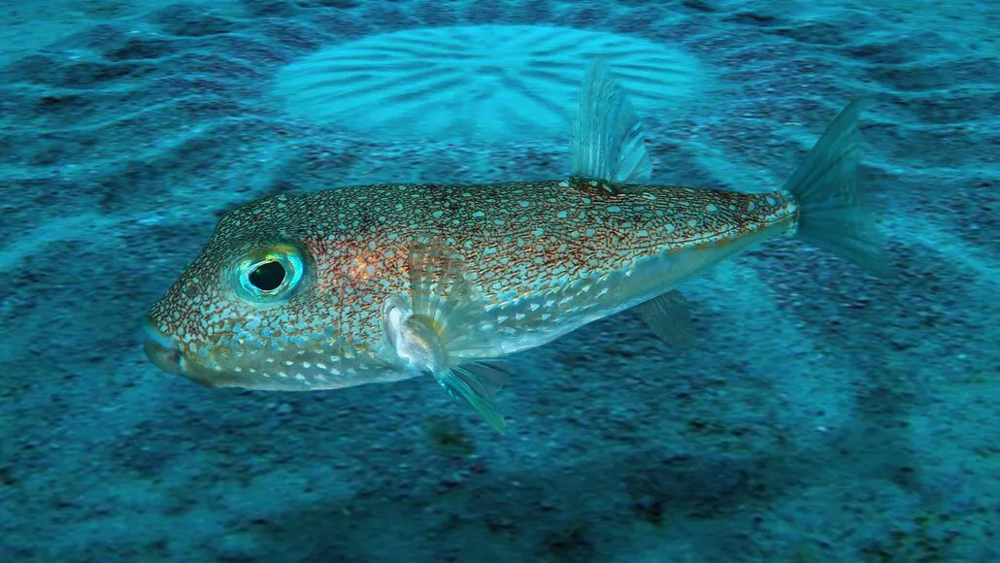
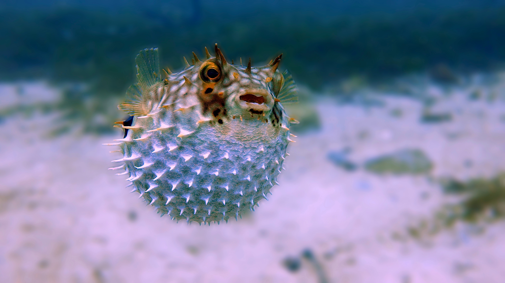

Pufferfish Love


Pufferfish Facts
Pufferfish, also known as blowfish, can inflate to the shape of a ball to escape predators. They fill their stomachs with large amounts of water and air, and can inflate to several times their normal size. Some pufferfish types can have spikes on their bodies to help fend off predators.
Most pufferfish contain the deadly neurotoxin tetradotoxin. Tetrodotoxin is one of the most potent neurotoxins known to science, with the toxin being deadly to humans. There is enough poison in one pufferfish to kill 30 adult humans, and there is no known antidote.
In Japan, pufferfish are called fugu and are a very expensive delicatessen. They are prepared by trained, licensed chefs. Most puffers are found in tropical and subtropical ocean waters. Some species of pufferfish are considered at risk due to overfishing, habitat loss, and pollution, but most populations are considered stable.
Pufferfish Sand Nests
Male white-spotted pufferfish (Torquigener albomaculosus) create intricate, 7-foot wide geometric sand circles on the seafloor to attract mates, a behavior discovered in 1995 off Japan. Over 7–9 days, they use their fins to sculpt ridges and valleys, decorating them with shell fragments. These structures, or "sand mandalas," reduce current impact to protect eggs.
Key Aspects of Pufferfish Sand Patterns:
- Purpose: The primary purpose is to attract a female mate. A more complex, symmetrical design signals a stronger male, with females laying eggs in the center.
- Construction Method: Males spend days swimming, flapping their pectoral fins, and using their bodies to carve ridges and valleys. They also place shell fragments at the edges for decoration.
- Functional Design: The radial, spoke-like design acts as a natural, fine-sand-gathering trap. The ridges are not just for display; they also help protect the eggs from being washed away by ocean currents.
- Uniqueness: These creations are temporary and never reused. They were once a mystery to scientists until the behavior was observed, with similar, though possibly different, structures discovered in Australia in 2018.
- Effort: The male works tirelessly for over a week, rarely resting, because currents would destroy the unfinished, delicate structure.
- Source: Wikipedia